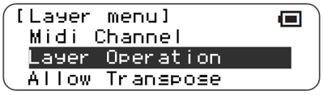
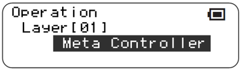
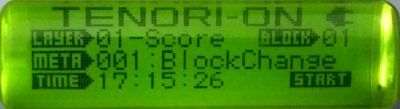
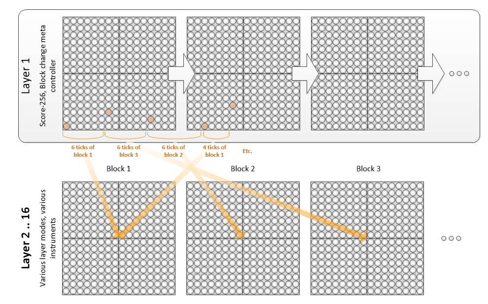

Meta Controller - Block Change
This function introduces meta controllers, the first one of which is a block change.
Meta controllers are instruments that, rather than playing notes, or outputting control change messages, act to change internal parameters of the TNR.
The first meta controller is a block change controller, that simply executes a block change to the block indicated by the “note”, where the lowest pitch is block 1, and the highest pitch is block 16.
This function is a property of the layer, and is selected under the layer menu. When active, the main display will change slightly to indicate that it is not an “INST” that is being played, but a META.
|  |  |
|---|---|
 |
 |
A typical usage model for this is to have layer 1 be a “sequencer” layer, set in score-256 mode (see Score X ), with a slow loop speed, using the block change meta controller as its instrument. This provides a way of writing a track, with a certain number of ticks of block 1, then a certain number of ticks of block 3, then block 4, etc.
In a playing score-256 mode, a block change note will not change the visible block, which enables correct entering of sequences of blocks even while playing.

However, for non-score-256 layer types, a block change will change the active visible block, which can make programming certain effects difficult. One workaround for non-score256 layers is to “program” the block changes with the Meta instrument set to 000 (No action), and then change the instrument to the block change instrument.
However, this does not preclude inventive use in other modes. The block change meta controller deliberately doesn’t do anything in PUSH mode since it isn’t meaningful. Behaviour in SOLO mode does change block as expected, but is probably only useful as a way of changing blocks with one key press e.g. in a live situation. Trying to use a block change meta in a BOUNCE layer, for example, can be quite confusing, since the block - and hence the live set of notes - keeps changing.
A few notes:
Meta controllers deliberately run slightly ahead of time, so that with two score layers running in perfect parallel, a block change LED column 1 will take effect before column 1 in the other layer gets executed. This is the correct intuitive behaviour.
Block changes are quite processor expensive, so rapid sequences of block changes may lead to audible timing glitches if there are a lot of notes. (Improving this is part of the overall optimization activity, but the TNR isn’t a powerhouse, so be nice)
Controller 0 is defined as a NULL controller deliberately, and is switched to by default when Meta controllers are selected, as a way of ensuring that nothing crazy happens to connected hardware. Contollers 2-15 are at the moment empty slots - selecting them will result in nothing happening.
Only 1 block change is allowed per “tick”; this is to try prevent loops where block 1 changes to block 2 which immediately changes back to block 1 etc.
Compatibility Issues
Loading songs/blocks saved in previous releases are unlikely to play properly.
Releases
First included in A017. Timing improved in A026